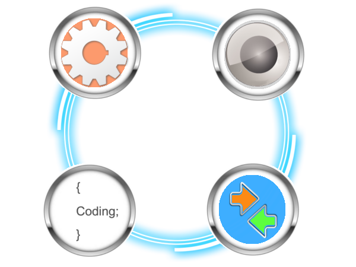

|  |
Our Technology We at Triomya combine the powers of technologies such as intelligence, programming, automation and communication into one simple technology which supports smart life for humans under the green belt. Triomya enlives by breathing technologies which are efficient, energy conscious and environmental friendly (EEE). The EEE technologies are selected through business polices of Triomya and constantly reviewed under business meets. All the designs developed from EEE world are valued on intelligence scale and automation throughput. For every design from the hands of Triomya a global value gets estimated and a new value for global automation index will be computed from time to time. |
Intelligence
For building Intelligent systems Triomya implements its own propritery design of Intelligence* coding.
The two standards which scales our desings are:
> AIS (Animation Intelligence Standard)
> MIS (Machine Intelligence Standard)
Programming
Triomya prefers a simple programming kit for its designs capable of coding inbuilt intelligence
Automation
Triomya imbibes any automation technology which suits the application nature
Communication
The selection of Wired, Wireless and Optical technology for an implementation will be decided from the recommendations given for the applicaiton.